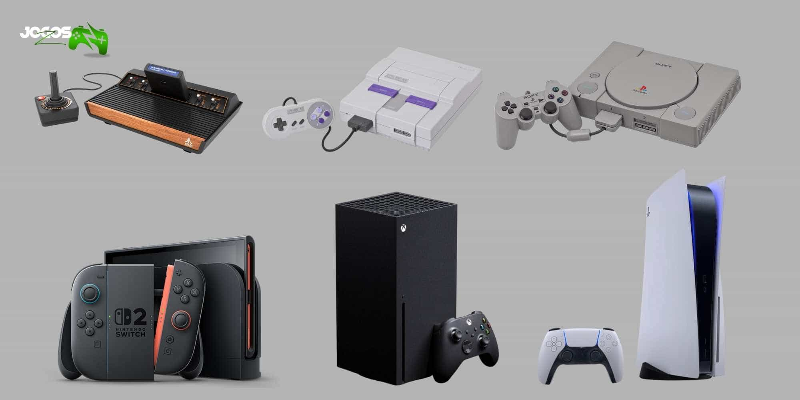

Desde os anos 1970, os videogames, ou jogos eletrônicos, vêm se consolidando como um fenômeno cultural global. Hoje, este universo é uma indústria avaliada mundialmente em 70 bilhões de dólares e a “cultura dos videogames” vem sendo incorporada a outras mídias da indústrias do entretenimento, transformando a linguagem do cinema, dos quadrinhos, dentre outros, bem como influenciando, através da perspectiva da “gamificação”, as dinâmicas e expectativas em relação à educação, ao trabalho, etc. Com uma linguagem própria, que alinha narrativas audiovisuais, sistemas de regras lúdicas e possibilidades diversas de interatividade, o videogame permite que jogadores explorem e interajam com ambientes digitais que contém representações e interpretações sobre o mundo social e o passado. E é isso, particularmente, que interessa e muito aos historiadores.
Em linhas gerais, o campo da História pode discutir o fenômeno dos jogos eletrônicos recuperando sua historicidade por dois pontos de vista: por um lado, o processo histórico dos desenvolvimentos técnicos, das relações sociais e de sua inserção em uma Indústria Cultural mais ampla; por outro, uma análise histórica das representações culturais e da construção de um imaginário sobre o passado contido na forma particular dos videogames – sobretudo em suas representações históricas.
VoltarJaime Pádua, fundador e co-CEO da FURIA, celebrou a aparição de Danil "molodoy" Golubenko na lista de melhores do mundo da HLTV.
Leia maisA BLAST perguntou para jogadores dos principais times mundiais qual time é o mais carregado por somente um jogador. A grande maioria das respostas foi a Spirit por conta do nível de Danil "donk" Kryshkovets.
Leia mais